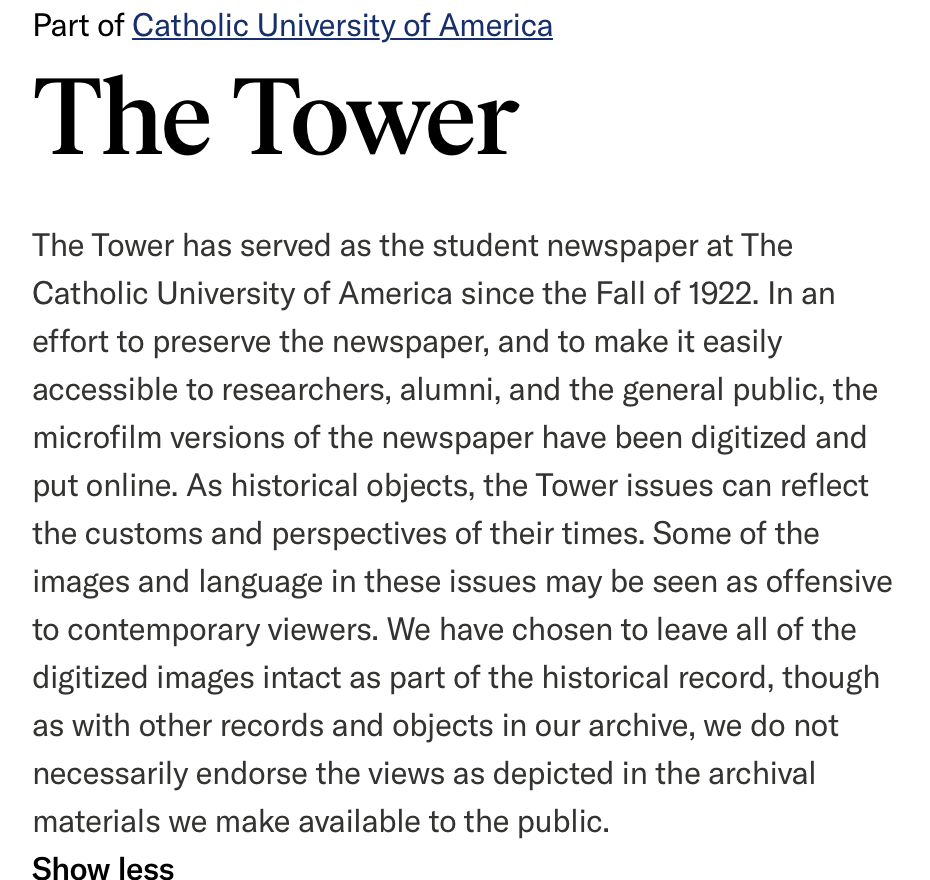
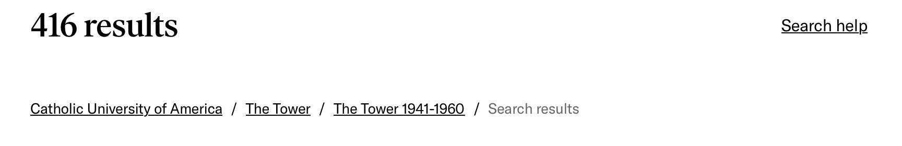
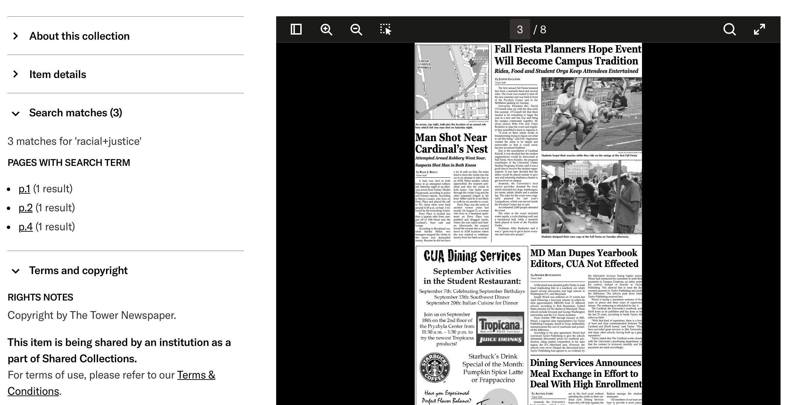

Student: Ryan Dombrock
Date: 10 April 2026
Digital Collection: The Tower Archive (1922 - 2018) (https://cuislandora.wrlc.org/islandora/object/cuislandora%3A67501)
The link provided (https://cuislandora.wrlc.org/islandora/object/cuislandora%3A67501) in the assignment instructions redirects to: https://redirects.wrlc.org which holds a table that suggests the proper new resource link for the legacy link https://cuislandora.wrlc.org/ is https://www.jstor.org/site/catholic-university/. This link takes the user to a JSTOR site containing items from 22 different Catholic University Collections. The user must then scroll and navigate to find 'The Tower' which is listed to contain 2,262 items. Clicking on this section directs the user to the following link: https://www.jstor.org/site/catholic-university/tower/. This is the system that is analyzed for this assignment.
The site holds a description of the Tower with a search box to search within the collection on the top half of the website and if a user scrolls down there are four submenus with images and listing archives of The Tower divided by date using the ranges 1922-1940, 1941-1960, 1961-1980, 1981-2000, ad 2001-2020. The left hand side of the bottom half of the page contains drop down menus to refine results, however, due to the nature of the content in the collection all being of one content type and in a single language, the date menu is the only actual way in which the results can be refined. Somewhat confusingly, the top portion of the website retains a JSTOR search bar, which if used, will search the JSTOR database and not just the collection of The Tower.

| Inputs | Outputs |
|---|---|
| User provided search term(s) | List of Tower Issues containing search term(s) which can be sorted by relevance, newest, or oldest |
| User clicks on one of the subsections of The Tower grouped in two decade time periods | Chronological listing of all Tower issues from this period with options to download, save, or cite |
| Click on 'Cite' button | MLA/Chicago/APA citation formats with options to copy or multiple options to export (NoodleTools/Refworks/EasyBib/RIS file/text file) |
| Click on an individual Tower Issue | Opens PDF version of selected issue in browser window |
| Click on 'Download' button | Page for individual issue with item details on the left including a direct URL link to the issue page and a scrollable digital copy of the full issue on the right-hand side as an imbedded object |


The user test also indicated that there was good up front information about the content of the collection and most navigation buttons functioned intuitively. The ability to randomly browse through the archive was quite simple and the user had a positive experience interacting with individual issues of The Tower in the archive. This general ease of navigation and consistency and standards matched generally with the major strengths of the heuristic analysis. Where the heuristic analysis noted that the search tool was cumbersome, the usability test determined it to be so unhelpful that it was abandoned to simple chronological browsing for the desired information. It should be noted that the functionality of the search tools is a complete failure if a user can be turned off so quickly. Perhaps this was underestimated in the heuristic analysis as it was conducted by an individual with more recent experience searching archives and databases whereas for a complete novice, the search tools were even less intuitive or useful. A suggested improvement for the system would be to include some basic instructions or tips to help a user utilize the search tools in an effective way or to provide some helpful resources if the user has difficulties engaging in search.